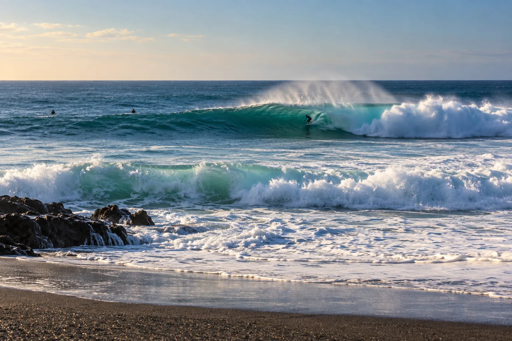

Punta Hermosa
Lima, Pérou · surf

Côte de pointes et de reefs au sud de Lima, dont la célèbre Pico Alto pour les grosses vagues.
- Lieu
- Lima, Pérou
- Niveau
- Intermédiaire
- Activités
- surf
- Type d'eau
- Mer / océan
- Coordonnées
- -12.33, -76.82 (position approximative du secteur)
Dangers à connaître
- Eau fraîche.
- Fonds rocheux.
- À Pico Alto et Punta Rocas, les grosses sessions sont l’affaire des experts du coin : observe d’abord et respecte strictement les priorités.
Le conseil d'Ocean Buddy
Porte une combinaison : le courant de Humboldt garde l’eau fraîche.
Ouvrir dans Ocean Buddy Télécharger sur l'App Store
Source : Fiche Ocean Buddy · septembre 2026 · à vérifier localement.